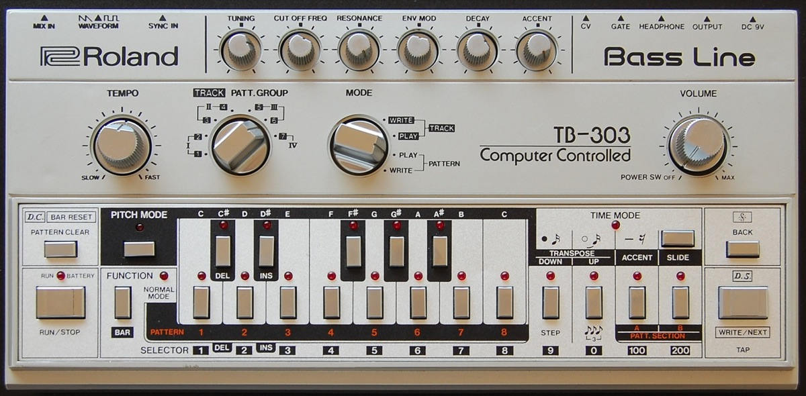
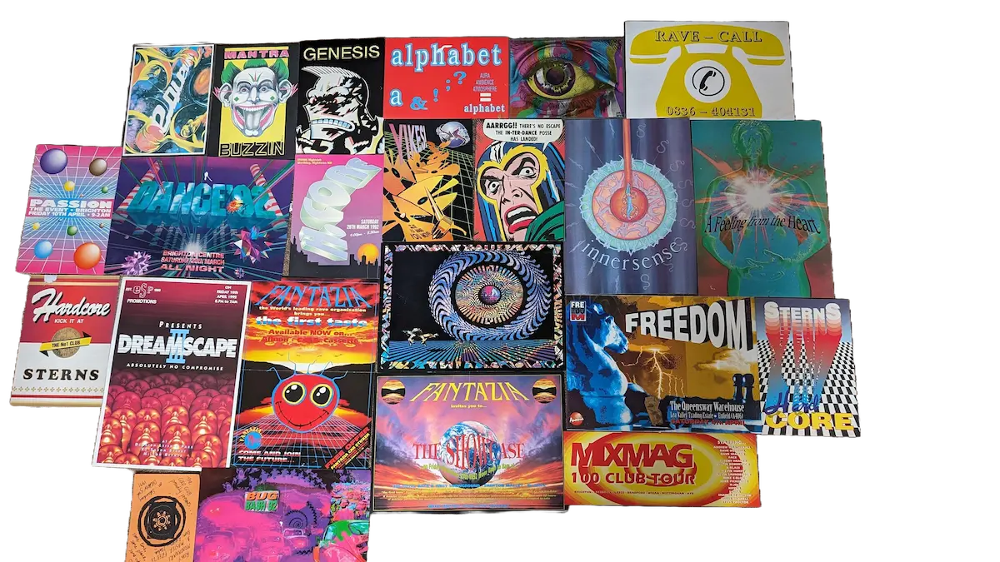
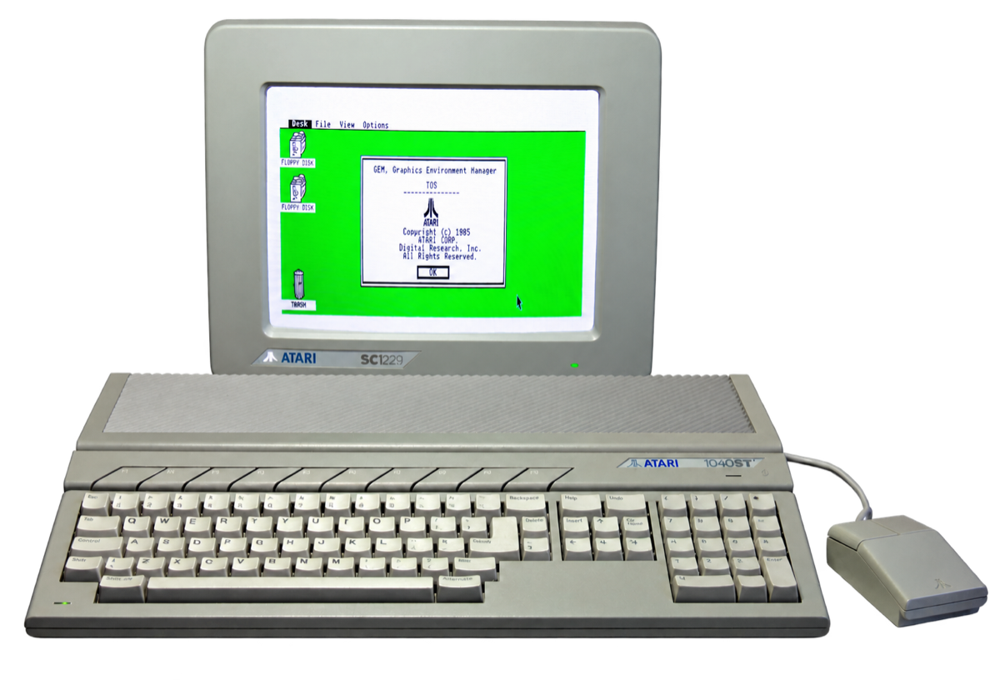
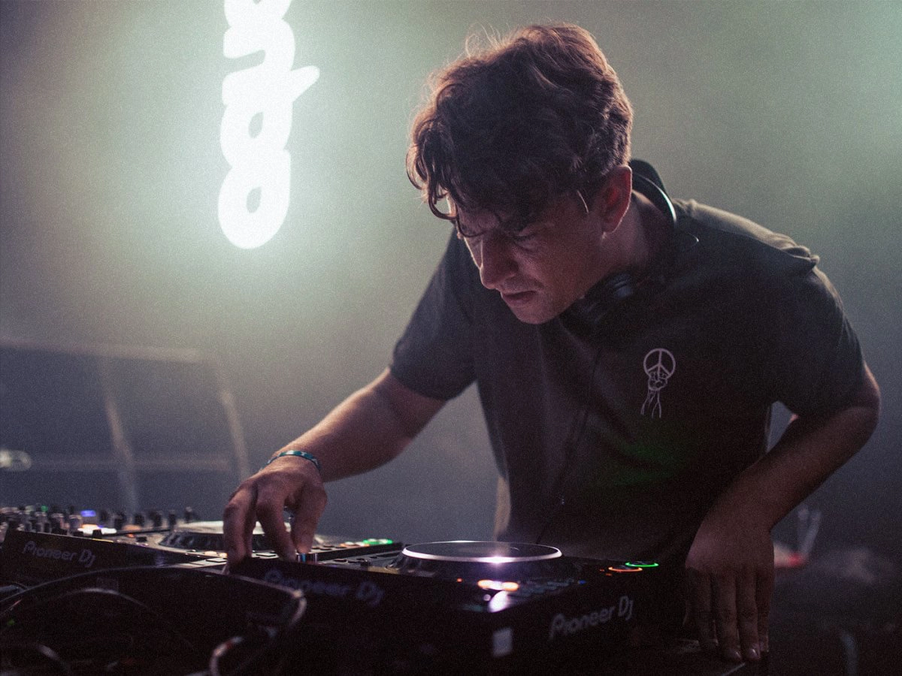

UK electronic music history
The Evolution of UK Electronic Music
From acid house and bleep to jungle, UK garage, grime, dubstep and the scenes reshaping British club music now.
UK electronic music is not one sound. It is a network of scenes that kept borrowing from one another, changing tempo, rebuilding rhythms and finding new ways to make bass work in a room. American house and techno were crucial starting points, but Britain’s clubs, sound systems, pirate stations, record shops and independent labels turned those imports into something local.
This timeline follows the connections between acid house, bleep, breakbeat hardcore, jungle, drum and bass, UK garage, grime, dubstep and the styles that came after them. The dates are approximate. Genres rarely begin in a single year, and several of these scenes overlapped before journalists, record shops or the people making the music agreed on a name.

Why did the UK produce so many electronic music scenes?
Britain did not develop its electronic music in isolation. After the Second World War, migration from Jamaica and other parts of the Caribbean brought sound-system culture into British cities. These systems were more than speakers. They were mobile communities built around selectors, MCs, exclusive dubplates and bass powerful enough to shape the physical experience of music. Reggae, dub and dancehall became part of the musical language of Black British communities and later fed directly into jungle, garage, grime and dubstep.
Another set of ideas arrived from the United States. House came from Chicago, techno from Detroit, electro and hip-hop from New York. British DJs and producers changed how those records were played and made. Records were sped up, mixed with breakbeats and played through systems designed for low frequencies. In clubs, warehouses and fields, the boundaries between house, techno, hip-hop, dub and pop became unusually porous.
The infrastructure mattered just as much as the records. Pirate radio could turn an unsigned dubplate into a local anthem. Independent labels pressed music quickly, while specialist shops connected producers, DJs and promoters. As samplers, Atari computers and early production software became easier to access, more tracks could be made outside professional studios. London was central, but it was never the whole story. Manchester, Sheffield, Leeds, Bristol and Birmingham each developed distinct electronic identities.
There was also a practical pressure to keep moving. When a scene became commercial, restricted by authorities or simply too familiar, younger producers reused its rhythms, tools and infrastructure in different ways. That cycle is one reason the history of UK electronic music looks less like a straight line than a family tree with branches that repeatedly cross.
How UK electronic music genres evolved and connect.
This is a map of shared lineages, not a claim that one record invented the next. British scenes overlap, borrow from one another and often coexist for years.
- 1987–91Acid house and bleep
House and techno imports meet British rave spaces and bass pressure.
- 1990sHardcore, jungle and drum and bass
Breakbeats accelerate and splinter while sound-system ideas move to the centre.
- 1993–2009UK garage, grime, dubstep, bassline and UK funky
Garage swing becomes several distinct but connected scenes.
- 2010s–nowHybrid club music and converging scenes
Older rhythmic languages circulate together rather than replacing one another.
1987–1991
Acid house becomes a movement, then bleep makes bass feel British.
Acid house began in Chicago, where producers used the Roland TB-303 bass synthesiser to create the squelching patterns that defined the style. The British contribution was not the invention of acid house, but the speed and scale with which it became the centre of a new youth culture.
By 1987 and 1988, clubs such as Shoom in London and The Haçienda in Manchester were bringing together imported house records, all-night dancing and a crowd that did not fit traditional club divisions. The summer of 1988 became known as the Second Summer of Love. As demand outgrew licensed venues, parties moved into warehouses and fields, connected through phone lines, flyers and motorway meeting points.

Acid house changed how electronic music functioned in Britain. The DJ became the focus of the night, continuous mixing mattered more than individual songs, and raves created communities beyond conventional clubs. The music remained rooted in Chicago. What Britain added was a fast-growing network of dancers, promoters, DJs and illegal parties from which new local sounds could emerge.
While acid house was spreading through clubs and raves, producers around Bradford, Sheffield and Leeds began making a colder, more spacious form of dance music. Bleep combined stripped-back techno rhythms with short electronic tones and sub-bass informed by reggae sound systems. It was futuristic, but its low end was unmistakably connected to British bass culture.
Bradford group Unique 3 introduced the bleep blueprint on a 1988 white-label release featuring “The Theme”, before releasing a reworked version in 1989. Warp Records then became its best-known label. Forgemasters’ “Track With No Name”, LFO’s self-titled anthem and early work by Nightmares on Wax helped establish music that was minimal enough to leave room for the speakers. The relationship between Bradford, Sheffield and Leeds also matters: this was a regional network rather than the product of a single city or club.
Bleep shows how quickly imported techno was being changed rather than merely copied. Its producers gave unusual weight to sub-bass, negative space and the physical effect of a large sound system. Jungle, UK garage and dubstep would later use those qualities with completely different rhythms.
1990–1998
Breakbeat hardcore mutates into jungle and drum and bass.
At the beginning of the 1990s, the pulse of British rave music started to fracture. Late 1980s UK hip-hop, Belgian techno, new beat and hip house had already shown how sampled breaks, heavy bass and harder electronic sounds could coexist. British rave producers pulled those ideas into house and techno foundations, then pushed the tempo upwards. Euphoric piano chords, rave stabs, sirens and pitched-up vocals made breakbeat hardcore sound both joyful and unstable.
Acts such as The Prodigy, SL2, Altern-8 and Shut Up and Dance brought different sides of the sound into focus. Some records leaned towards pop hooks, others towards darker basslines and denser breakbeat editing. The scene moved through legal clubs, huge outdoor events and illegal parties, supported by tape packs, flyers and stations that could reach listeners ignored by licensed radio.

Breakbeat hardcore was less a fixed formula than a period of rapid mutation. By late 1992, its branches were becoming easier to hear. As tempos rose and producers placed more emphasis on chopped breaks, reggae bass and darker atmospheres, part of the scene moved towards jungle. Other producers kept the four-to-the-floor kick and euphoric vocals, helping form happy hardcore. The split was gradual, and transitional records often belonged to both worlds.
For a closer look at the sampled breaks, production methods and later styles that grew from this period, read the complete guide to breakbeat music.
Jungle developed inside the early 1990s rave scene as producers intensified the breakbeats and brought reggae, dub and dancehall influences closer to the centre of the music. Sampled breaks were chopped into new rhythmic patterns, while deep basslines and sound-system techniques gave the records their physical force. MCs and vocal samples connected the music to Jamaican traditions as well as to contemporary Black British life.
There is no uncontested first jungle record, and the term itself carries a complicated history. What is clear is that by 1993 and 1994 a distinct network of producers, labels, DJs and pirate stations was in place. Reinforced, Moving Shadow and Suburban Base released foundational music. Kool FM gave the scene a continuous broadcast presence. Artists including 4hero, Shy FX, Remarc, Congo Natty and LTJ Bukem showed how wide jungle could be, from raw dancefloor pressure to atmospheric experimentation.
Jungle was not simply faster rave music. It reorganised the relationship between drums and bass and made Black British cultural influence impossible to treat as background detail. Its success also created the conditions in which the term drum and bass became increasingly prominent.
For a closer look at the Amen break, dubplates, pirate radio, terminology and later subgenres, read the complete history of jungle music.
Jungle did not simply change its name to drum and bass in 1994. The terms overlapped, and people inside the scene still disagree about where one ends and the other begins. During the middle of the decade, however, drum and bass became a more common label for a widening range of production styles.
Founded by Goldie with Kemistry and Storm, Metalheadz became one of the scene’s defining institutions in the mid-1990s. Its weekly Sunday Sessions at London’s Blue Note connected technical innovation with a strong club community. Goldie’s “Timeless” showed that breakbeat music could sustain long arrangements and orchestral ambition, while Roni Size and Reprazent brought a live-band identity to the sound. Fabio and Grooverider remained crucial as DJs who linked earlier rave and jungle records to the emerging drum and bass vocabulary.
Calling drum and bass a cleaner or more sophisticated version of jungle misses the variety in both. Raw, atmospheric, jazzy and highly technical records existed on either side of the terminology. By the late 1990s, the wider drum and bass name could contain several aesthetics at once.
1993–2001
UK garage learns to swing, skip and split.
UK garage grew from American garage house but changed in British clubs from around 1993 and 1994. Imported records were often played faster, including at Sunday parties and in second rooms at jungle events. British producers added heavier bass, chopped vocals and local rhythmic ideas. By 1996 and 1997, speed garage had developed a recognisable combination of four-to-the-floor kicks, warping basslines and ragga-influenced vocal samples.
Two-step removed kicks from expected positions, creating the skipping rhythm most closely associated with UK garage. Todd Edwards, an American producer whose cut-up vocals strongly influenced British artists, was an important source. DJs and producers including DJ EZ, Tuff Jam, Wookie and MJ Cole turned those ideas into a local scene supported by pirate radio, specialist clubs and labels such as Public Demand and Locked On.
By the end of the decade, garage had moved into the UK charts. Its success produced glossy vocal records, but darker instrumentals and increasingly prominent MCs continued developing underneath. Those strands would help create grime and dubstep. They did not appear overnight, and neither was simply a renamed form of garage.
The 1990s
Bristol, big beat, Warp and Birmingham techno tell other stories.
The rave and bass continuum was only part of British electronic music in the 1990s. In Bristol, Massive Attack, Portishead and Tricky combined hip-hop production, dub space, soul and post-punk atmosphere. The term “trip-hop” appeared in a 1994 Mixmag article about DJ Shadow and was then applied more widely to the Bristol sound. The three artists most closely associated with the label rejected it, but the music still became globally influential.

Big beat took another route into the mainstream through artists such as The Chemical Brothers, Fatboy Slim, Propellerheads and Bentley Rhythm Ace. Heavy breakbeats, hip-hop samples, acid lines and rock-sized production helped this music reach audiences beyond specialist clubs. Around Warp Records, Aphex Twin, Autechre, Boards of Canada and Squarepusher made electronic music that drew from techno, ambient and breakbeat experimentation. Warp’s Artificial Intelligence compilation appeared in 1992, while the IDM mailing list helped establish the disputed term in 1993. That label can hide the artists’ connections to rave culture as much as it explains them.
Birmingham also developed a severe, hypnotic techno identity during the 1990s through Surgeon, Regis and the Downwards label. These scenes did not form one direct sequence, but together they show why British electronic music cannot be explained only through London or through a single family of bass genres.
2000–2009
Dark garage branches into dubstep and grime while bassline and UK funky move elsewhere.
Before dubstep had a stable name, producers were already stripping UK garage down. Darker two-step records used fewer vocals, more space and deeper sub-bass. Around Croydon, Big Apple Records became a meeting point for producers and DJs including Hatcha, Artwork, Skream and Benga. Horsepower Productions connected garage rhythms to dub techniques, while early club nights gave the music room to develop outside the expectations of mainstream garage.
The term dubstep began to settle in the early 2000s and gained wider visibility after an XLR8R cover story in 2002. FWD>>, founded in 2001, gave the emerging sound a regular London home. The DMZ night followed in Brixton in 2005. Tempa, Hyperdub and DMZ documented different sides of the music: Digital Mystikz emphasised dub weight and meditative repetition, while Skream and Benga brought their own combinations of melody, pressure and rhythmic movement.

Dubstep and grime shared garage and jungle roots, pirate-radio infrastructure and some producers, but developed in parallel. Dubstep was usually instrumental and focused on space and sub-bass, while grime placed greater emphasis on MCs and jagged electronic rhythms. The boundary was never absolute.
Grime developed as young producers and MCs pushed away from the smoother end of UK garage. Its instrumentals often sat around 140 BPM, with sparse drums, abrasive synthesiser sounds and enough open space for competing voices. The music drew from garage, jungle MC culture, dancehall and hip-hop, but its language and production reflected early 2000s London.
Pirate stations including Rinse FM and Deja Vu gave crews a place to test unfinished tracks, clash and build local audiences. Software such as FruityLoops helped young producers work in bedrooms and on shared computers. Wiley’s eski sound, Musical Mob’s “Pulse X”, Ruff Sqwad’s melodic instrumentals and the early work of Dizzee Rascal showed that grime was never a single formula.
The name took time to settle, and many participants initially thought they were making a new form of garage. MCs gradually moved from supporting DJs to becoming the central artists. DVDs, Channel U, mixtapes and pirate broadcasts created a largely independent route from neighbourhood scenes to a national audience.
Bassline developed through Sheffield’s garage scene and clubs such as Niche from the late 1990s, before becoming more widely recognised in the early 2000s. It kept UK garage swing but placed greater weight on bass hooks, direct drops and dancefloor momentum. The sound later travelled beyond its regional base through pirate radio, record circulation and chart records such as T2’s “Heartbroken”.
UK funky emerged in the middle of the 2000s and was clearly established by around 2007. It connected house tempo with syncopated percussion, soca, grime, broken beat and music from African diasporic club scenes. Producers and DJs including Roska, Cooly G, Geeneus, Apple and Marcus Nasty built a rhythmic language that sounded different from both mainstream house and the darker direction dubstep was taking. Bassline and UK funky were separate scenes, but both showed that UK garage had produced more futures than grime and dubstep alone.
2010–2016
After dubstep, the useful labels get wider and less exact.
By 2010, dubstep had split into several directions and no single genre replaced it. Producers including James Blake, Mount Kimbie, Joy Orbison, Pearson Sound, Ikonika, Girl Unit and Jam City connected garage swing, dubstep space, house, techno, grime and R&B in different proportions. Labels such as Hessle Audio, Hyperdub, Night Slugs, Numbers and Hotflush gave this music overlapping audiences without turning it into one coherent scene.
Burial’s 2006 debut and 2007 album Untrue became major reference points for the atmospheric, emotionally charged music later grouped under “future garage”. The label is useful for discovery, but it can flatten important differences between Burial, later bedroom producers and the wider post-dubstep period.
Journalists often reached for “post-dubstep” or “UK bass” to describe the period. Both terms are useful as umbrellas, but neither names a precise sound. UK funky was also fragmenting by this point, yet its percussion and approach to rhythm continued inside music that was marketed under other names. No single genre defined this period. Hybrid club records could move between several UK lineages in a single track.
In London, the Boxed night gave instrumental grime a regular physical home. Producers including Logos, Mr Mitch, Slackk, Visionist, Mumdance, JT The Goon and Murlo treated grime’s eski melodies, square waves and empty space as material for club music without a permanent MC. It was a renewal of grime’s production language rather than a clean break from the genre.
Bristol developed another network around Livity Sound, Peverelist, Kowton and Asusu, followed by artists and labels including Batu and Timedance. Broken rhythms, techno pressure and the low-end discipline of dubstep met without settling into a single genre name. At the same time, PC Music, founded by A. G. Cook in 2013, rebuilt Eurodance, trance, happy hardcore and digital pop through deliberately synthetic production. Danny L Harle and Hannah Diamond were central to the label, while SOPHIE was a close collaborator whose work reached far beyond it. These scenes sounded different, but each resisted the idea that UK electronic music had to follow a neat succession of genres.
2017–present
UK garage, jungle and 140 return without becoming museum pieces.
By the late 2010s, a younger group of producers was returning to the rhythmic detail of UK garage without treating it as a museum piece. Conducta’s Kiwi Rekords became a visible centre, while producers including Mind Of A Dragon and Sharda moved between two-step, speed garage, bassline and breaks. The records used recognisable garage swing but circulated through contemporary platforms, festivals and international DJ networks. Sammy Virji, Interplanetary Criminal, Soul Mass Transit System and Main Phase would become more visible in the years that followed.
Jungle was also gathering new energy below the level of a mainstream revival. Tim Reaper, Sully and Coco Bryce drew from early breakbeat science, atmospheric jungle and hardcore while extending those methods through modern production. At the same time, UK sets absorbed ideas from footwork, ballroom, Jersey club, gqom and other scenes. Producers were combining older UK rhythms with music circulating through international club networks.
When clubs closed during the pandemic, discovery moved further towards Bandcamp, SoundCloud, livestreams, radio archives, short videos and online communities. That change helped older UK sounds reach listeners who had not experienced their original scenes. Jungle gained a highly visible new generation through artists and DJs including SHERELLE, Nia Archives, Tim Reaper and the Future Retro network, while garage continued moving between underground releases and increasingly large festival crowds.
This wider attention did not erase the scenes that had kept the music alive. It built on decades of work by specialist labels, record shops, radio stations and promoters. In 2022, Eliza Rose and Interplanetary Criminal’s UK garage track “B.O.T.A. (Baddest of Them All)” reached number one in the UK. That did not prove that every form of garage had become mainstream, but it was a clear marker that the sound had found another mass audience.
During 2023 and 2024, UK garage and speed garage became increasingly visible in clubs and festival line-ups. Sammy Virji, Interplanetary Criminal, Oppidan, MPH, Silva Bumpa, Main Phase and Bakey represented different parts of a broad field rather than one uniform revival. Some records leaned towards vocal garage, others towards bassline, breaks or harder speed garage. Jungle also continued expanding through Nia Archives, SHERELLE, Tim Reaper, Sully and producers working far outside Britain.
The term “140” became useful for a shared tempo area in which dubstep, grime instrumentals, dark garage, breaks and bass-heavy techno could meet. It should not be mistaken for a single new genre. In practice, DJs were connecting histories that had always overlapped while audiences became less concerned with defending the old borders between them.
By 2026, renewed interest in UK garage, jungle, drum and bass and speed garage was visible in listening data, uploads and event listings. The Fourth UK Electronic Music Industry Report estimated that measurable UK electronic music activity contributed £2.47 billion in 2025. It also found that Resident Advisor listings grew from 29,499 events in 2024 to 32,601 in 2025, with 51 per cent taking place outside London. Garage, jungle and hardcore all increased their share of listed events from 2022.
The recovery was uneven. The same report counted 823 UK clubs, 36 per cent fewer than in March 2020, even as free parties, daytime events and alternative venues became more important. Growth in the North of England and the global circulation of UK artists suggested that the culture was spreading while some of its traditional spaces disappeared. Beatportal’s review of 2025 also identified UK garage, bassline and speed garage as a major international club trend. By 2026, the story was no longer just one of revival. British rave forms had again become a shared language for producers and DJs far beyond Britain.
After 2026
What happens next?
The history above can be checked against records, archives and reporting. Anything after 2026 is a forecast. The most likely future is not one dominant new British genre replacing everything before it, but several existing lineages being recombined under new social and technological conditions.
UK garage may stop being described as a revival and become a normal part of club and pop production again. The risk is a wave of formulaic records that copy the surface of 1998 without its rhythmic personality. Around 140 BPM, dubstep, grime, speed garage, breaks, bassline, techno and halftime may continue functioning as a shared DJ language rather than forming one stable genre. Jungle is likely to support several overlapping audiences, including vocal and festival-facing crossover, historically informed underground jungle and experimental breakbeat music that does not always use the jungle name.
The loss of mid-sized clubs is already giving regional cities, temporary venues, radio, record shops and community-led parties a larger role. Producers will keep exchanging ideas with amapiano, gqom, baile funk, Jersey club, footwork, hardgroove, trance and other international club scenes. Those exchanges will matter when artists transform what they hear through local experience, not when they simply collect fashionable rhythms.
A quick guide to the main UK electronic music genres.
The table below is a quick listening guide, not a rigid classification. Tempos overlap, and producers regularly borrow features from neighbouring scenes.
| Genre | Approximate UK period | Rhythm and tempo | Defining traits | Immediate roots |
|---|---|---|---|---|
| Acid house | Late 1980s | Usually four-to-the-floor, around house tempo | TB-303 bass patterns, repetitive grooves | Chicago house, disco, electronic dance music |
| Bleep | 1988 to early 1990s | Sparse techno rhythms | Short electronic tones, heavy sub-bass, negative space | Detroit techno, house, sound-system culture |
| Breakbeat hardcore | Early 1990s | Fast sampled breaks, often with four-to-the-floor elements | Rave stabs, pianos, pitched vocals, abrupt edits | Acid house, techno, hip-hop breakbeats |
| Jungle | Early to mid-1990s | Chopped breaks, commonly around 150 to 170 BPM | Reggae and dancehall samples, deep bass, MCs | Breakbeat hardcore, dub, reggae, hip-hop |
| Drum and bass | Mid-1990s onward | Fast breakbeats, commonly around 160 to 180 BPM | Wide range from atmospheric to highly technical and aggressive | Jungle, breakbeat, dub and electronic production |
| UK garage | Mid-1990s onward | Four-to-the-floor or 2-step swing, usually around 125 to 135 BPM | Chopped vocals, shuffled percussion, basslines | US garage house, R&B, jungle-era club culture |
| Grime | Early 2000s onward | Often around 140 BPM with sparse, syncopated drums | MC-led vocals, cold synths, sub-bass | UK garage, jungle MC culture, dancehall, hip-hop |
| Dubstep | Early 2000s onward | Usually around 140 BPM, often felt in half-time | Sub-bass, space, syncopation, dub techniques | Dark garage, 2-step, dub, jungle |
| Bassline | Late 1990s onward | Garage swing, commonly around 130 to 140 BPM | Prominent bass hooks, direct drops, vocal and instrumental forms | UK garage, speed garage, Sheffield club culture |
| UK funky | Late 2000s onward | House tempo with syncopated percussion | Rhythmic swing, percussion-led grooves, vocal and instrumental forms | House, garage, soca, grime and African diasporic club music |
Frequently asked questions.
What electronic music genres originated in the UK?
Genres widely associated with British origins or distinct British formation include bleep, breakbeat hardcore, jungle, drum and bass, UK garage, grime, dubstep, trip-hop, big beat, bassline and UK funky. Other styles, such as house and techno, originated in the United States but developed important British scenes that influenced their global evolution.
Why did the UK create so many electronic music genres?
Several musical and social networks overlapped in a relatively small country. Caribbean sound-system culture, imported American records, independent labels, pirate radio, clubs, raves and affordable production technology allowed new ideas to circulate quickly. Strong regional scenes also interpreted the same influences differently.
Did jungle come before drum and bass?
Jungle became recognisable in the early 1990s, while drum and bass became a more common term during the middle of the decade. There was no clean changeover. The names overlapped, and listeners, artists and historians still disagree about whether they describe separate genres, periods or different parts of the same musical continuum.
How did UK garage lead to grime and dubstep?
By the end of the 1990s, some UK garage producers were making darker, more minimal instrumentals. MC-led versions of this changing sound contributed to grime, while spacious, bass-focused productions around Croydon and London developed into dubstep. Both scenes also renewed ideas inherited from jungle, dub and pirate radio.
What role did pirate radio play in UK electronic music?
Pirate radio allowed DJs, MCs and producers to reach local audiences without waiting for support from licensed broadcasters or major labels. Stations premiered dubplates, built crews, advertised events and gave emerging genres a shared public space. In several scenes, radio was part of the creative process rather than simply a promotional channel.
What happened to UK electronic music after dubstep?
No single genre replaced dubstep. During the 2010s, labels and producers connected garage, grime, house, techno, R&B and broken rhythms in different ways. Instrumental grime, Bristol’s bass and techno hybrids, PC Music, new UK garage and the jungle revival developed through separate but overlapping networks. Terms such as post-dubstep and UK bass describe parts of this period, but neither represents one unified scene.
Is UK garage still popular in 2026?
Yes. UK garage, bassline and speed garage reached new international audiences during the first half of the 2020s. The Fourth UK Electronic Music Industry Report found that garage increased its share of UK electronic event listings between 2022 and 2025, while uploads and video viewing also rose. The current scene includes vocal garage, two-step, bassline, speed garage and records that combine those sounds with breaks, grime and dubstep.
Who are the key UK electronic music artists?
No short list can represent every British scene, but useful starting points include LFO and Nightmares on Wax for bleep; The Prodigy and SL2 for breakbeat hardcore; Shy FX, 4hero, Goldie and LTJ Bukem for jungle and drum and bass; MJ Cole, Wookie and DJ EZ for UK garage; Wiley and Dizzee Rascal for grime; Digital Mystikz, Skream and Benga for dubstep; and Burial, Joy Orbison and later artists including Nia Archives for the music that followed.
Sources.
- The Guardian, “How Bleep Made Yorkshire the Electronic Music Capital of Britain”
- The Guardian, “The Push to Archive the History of Jungle and Drum’n’Bass”
- Metalheadz, Goldie: Artist History
- The Guardian, “How UK Garage Conquered 21st-Century Pop”
- Cambridge University Press, “Just Don’t Call It Trip Hop”
- DJ Mag, “How Big Apple Records Became the Birthplace of Dubstep”
- The Guardian, “Jungle, Garage and Grime: 20 Years of Rinse FM”
- Official Charts, “B.O.T.A. (Baddest of Them All)”
- NTIA, The Fourth UK Electronic Music Industry Report
Continue reading